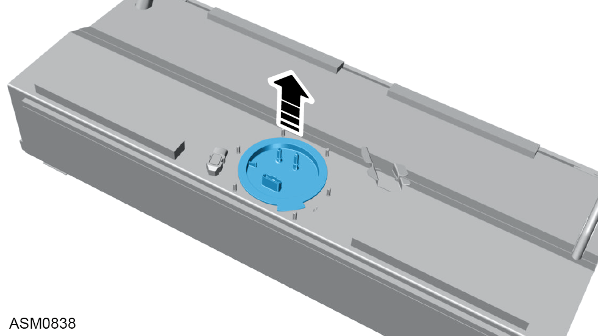
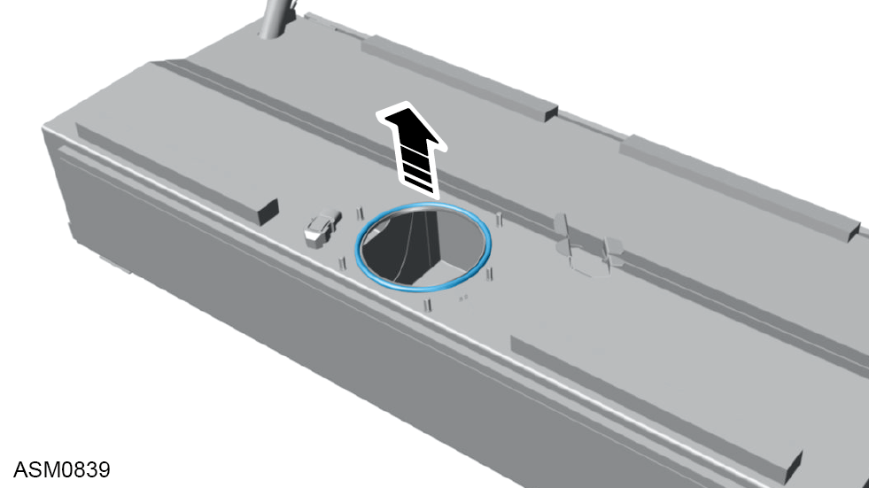

Pump - Fuel And Sender Unit
Print
Operation Code: 44.03.01-02
Removal
- Remove fuel tank. Refer to procedure.
- Remove M6 nyloc nuts and washers (x6) securing fuel pump locking ring to fuel tank.
 CAUTION: Apply a suitable lithium based
lubricant such as Castrol Moly
Grease to threads of the fuel pump
retaining studs to prevent ‘Galling’.
CAUTION: Apply a suitable lithium based
lubricant such as Castrol Moly
Grease to threads of the fuel pump
retaining studs to prevent ‘Galling’.
NOTE: Remove nuts in a diagonal sequence.
- Remove fuel pump locking ring.

- Remove fuel pump and sender unit from fuel tank.
NOTE: Tilt the fuel pump during removal to prevent the float from fouling on the fuel tank.

- Remove and discard fuel pump seal.
Installation
- Installation is the reverse of removal procedure except for the following:
- Renew fuel pump seal.
- Install original M6 nyloc nuts and washers (x6) securing fuel pump locking ring to fuel tank. Torque 2 Nm.
CAUTION: Apply a suitable lithium based lubricant such as Castrol Moly Grease to threads of the fuel pump retaining studs to prevent ‘Galling’.
CAUTION: Ensure
clamp ring is flush against top of fuel pump flange.
NOTE: Install nuts in a diagonal sequence.
- Whilst using finger pressure
to hold the fuel pump in position, remove
and discard the original
M6 nyloc nuts and washers (x6).
- Remove fuel pump locking ring and inspect fuel pump seal fitment.
NOTE: Continue using finger pressure to hold fuel pump in position.
- Install fuel pump locking ring.
NOTE: Continue using finger pressure to hold fuel pump in position.
- Install new nyloc nuts and washers (x6). Torque 2 Nm.
NOTE: Tighten nuts in a diagonal sequence.
NOTE: Continue using finger pressure to hold fuel pump in position.
- Apply a final tightening to nyloc nuts (x6). Torque 3 Nm.
CAUTION: Ensure clamp ring is flush against top of fuel pump flange.
NOTE: Tighten nuts in a diagonal sequence.